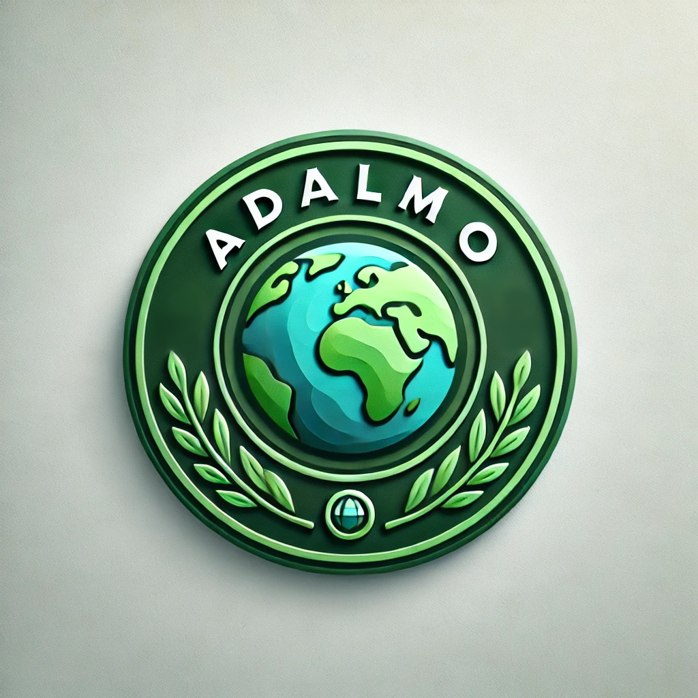

Tu compromiso con el medio ambiente empieza aquí

Incentivos
- Sello Adalmo
- Premios Anuales
Materiales más reciclados
- Plásticos
- Metales y chatarra
- Papel y carton
Productos con materiales reciclados
- Botellas
- ...

Empresas Top consumidoras de material reciclado
Estas son las empresas de este mes que mas han usado materials realizados
Premios Adalmo

Estas navidades se realizará el evento anual de los premios Adalmo, los cuales consisten en ofrecer unos certificados unicos para las empresas que más se han beneficiado de nuestros materiales reciclados y que más han aportado al medioambiente.
¡Te invitamos a ver este evento en directo en nuestro canal de youtube!